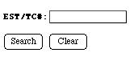

Searching for Reports Example
Shown below is the form used for retrieving reports.

The form above is not active, but in the real database allows direct access to reports of ESTs or TCs using one of three search terms.
ID# - this is the P_ or Q_ number of individual ESTs eg
P_473
or
P_13774
.
GenBank Accession Number: such as
T04426
or
R65270
TC#: such as
TC8203
or
TC8901
Back to the Search Page